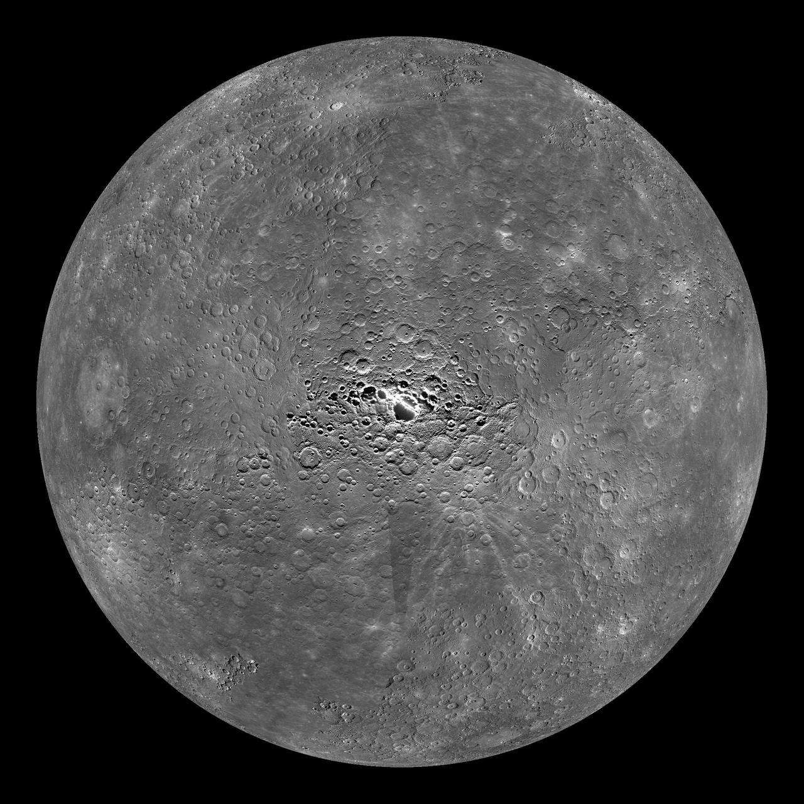
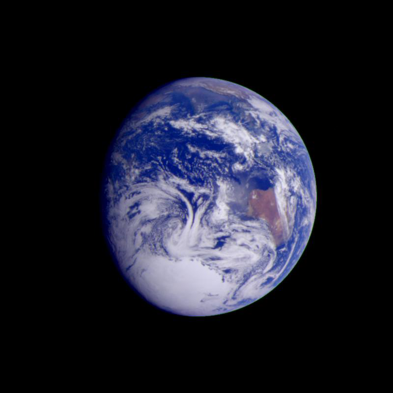
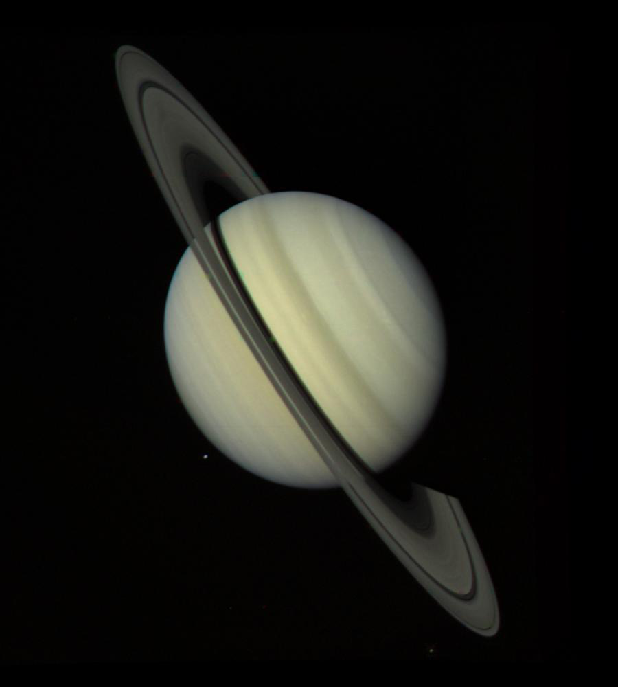
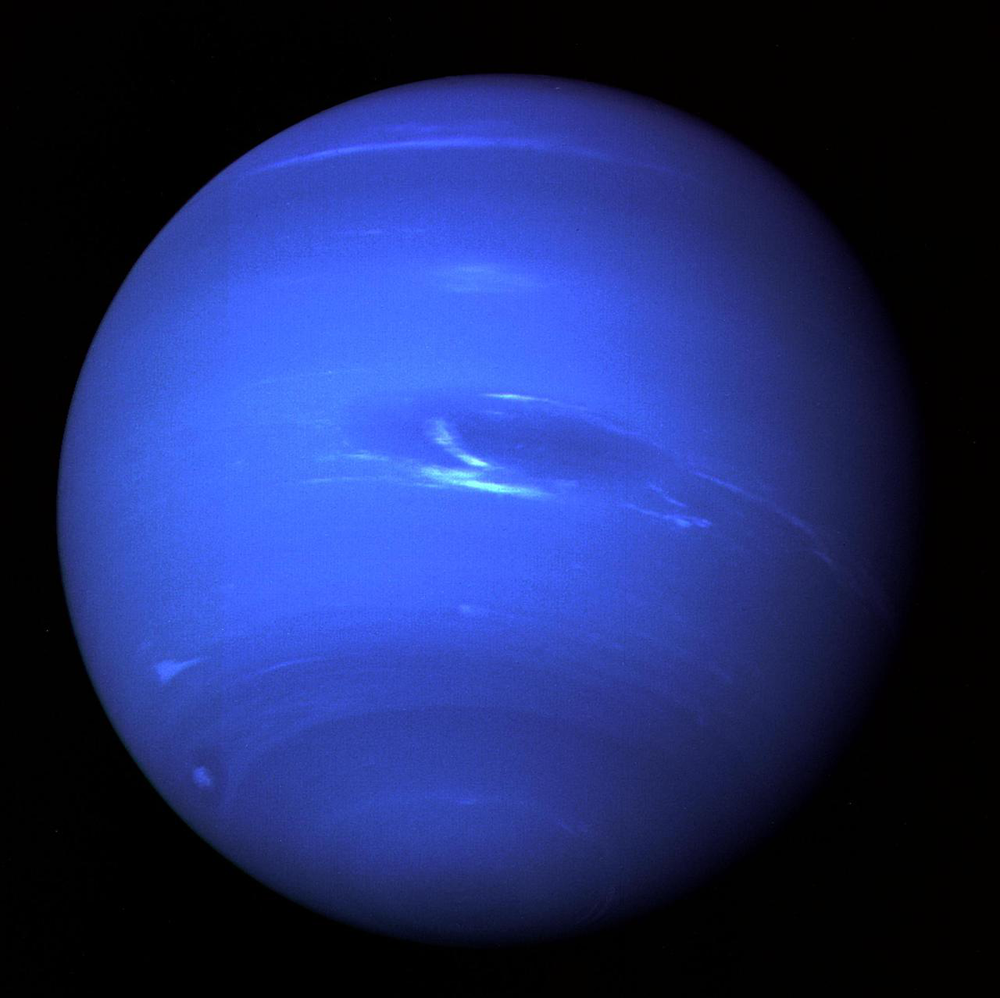

Bola plasma berpijar yang menjadi pusat tata surya kita. Matahari adalah benda langit
terbesar yang ada di tata surya. Saking besarnya, matahari dapat menampung 1,6 juta Bumi
di dalamnya. Semua benda langit di sistem tata surya beredar mengelilinginya
karena gravitasinya yang sangat kuat. Matahari sangatlah penting bagi kehidupan Bumi,
karena cahaya dan energi yang dipancarkannya dibutuhkan bagi semua makhluk hidup di Bumi.
Merkurius

Nama: Merkurius/Utarid
Radius: 2.439 km
Massa: 3,3022x10^23 kg (0,055x massa Bumi)
Umur: ~4,5 miliar tahun
Jarak ke Matahari: 57 juta km (0,4 AU)
Lama 1 Tahun: 88 hari Bumi
Lama 1 hari: 176 hari Bumi
Satelit alami: 0
Tipe: Terestrial/berbatu
Planet terkecil di tata surya dan yang tercepat, Planet ini adalah planet terdekat dari
Matahari. Ukuran planet ini hanya sedikit lebih besar dari Bulan. Atmosfer Merkurius
sangatlah tipis, sehingga perbedaan suhu siang dan malamnya sangat signifikan. Di siang
hari, suhu merkurius bisa mencapai 430°C, dan di malam hari bisa mencapai -180°C.
Venus
Nama: Venus/Zohrah/Bintang Kejora
Radius: 6.051 km
Massa: 4,8676x10^24 kg (0,866x massa Bumi)
Umur: ~4,5 miliar tahun
Jarak ke Matahari: 108 juta km (0,72 AU)
Lama 1 Tahun: 224,7 hari Bumi
Lama 1 hari: 243 hari Bumi
Satelit alami: 0
Tipe: Terestrial/berbatu
Planet terdekat kedua dari Matahari. Venus mendapat julukan Bintang Kejora atau
Bintang Fajar/Senja karena jika dilihat dari Bumi, Venus akan tampak terang seperti
bintang di ufuk barat atau timur. Venus merupakan planet terpanas di tata surya.
Atmosfer Venus sangatlah tebal, sehingga panas matahari menjadi
terperangkap dan mengakibatkan permukaan Venus menjadi sangat panas (475°C.).
Bumi

Nama: Bumi/Earth/Gaia/Terra/Tellus
Radius: 6.371 km
Massa: 5,974x10^24 kg
Umur: ~4,5 miliar tahun
Jarak ke Matahari: 150 juta km (1 AU)
Lama 1 Tahun: 364,5 hari
Lama 1 hari: 24 jam
Satelit alami: 1
Tipe: Terestrial/berbatu
Planet tempat rumah kita berada. Bumi adalah planet ke tiga terdekat dari Matahari.
Jaraknya yang aman, tidak terlalu jauh dan tidak terlalu dekat, menjadikannya tempat yang
cocok untuk kehidupan. Jika dilihat dari luar angkasa, Bumi akan tampak kebiruan.
70% permukaan Bumi tertutup air. Bumi memiliki satu satelit alami yang diberi
nama Bulan
Mars
Nama: Mars/Marikh/Anggaraka
Radius: 3.390 km
Massa: 6,4185x10^23 kg (0,107x massa Bumi)
Umur: ~4,5 miliar tahun
Jarak ke Matahari: 228 juta km (1 AU)
Lama 1 Tahun: 687 hari Bumi
Lama 1 hari: 24,6 jam
Satelit alami: 2
Tipe: Terestrial/berbatu
Dikenal juga sebagai planet merah, Mars adalah planet keempat terdekat dari Matahari.
Mars memiliki dua satelit alami, yaitu Phobos dan Deimos. Mars terlihat berwarna
kemerahan karena keberadaan besi(III) oksida di permukaannya. Lingkungan Mars lebih
bersahabat bagi kehidupan dibandingkan Venus, tetapi masih belum cukup ideal bagi manusia.
Penghuni Mars saat ini adalah robot bernama Perseverance yang bertugas untuk mengumpulkan
data-data permukaan Mars.
Jupiter
Nama: Jupiter/Musytari
Radius: 69.911 km
Massa: 1,8986x10^27 kg (317x massa Bumi)
Umur: ~4,5 miliar tahun
Jarak ke Matahari: 463 juta km (5,1 AU)
Lama 1 Tahun: 11 tahun Bumi
Lama 1 hari: 9,93 jam Bumi
Satelit alami: 80
Tipe: Gas giant/raksasa gas
Planet terbesar di tata surya. Sebagai planet gas, Jupiter tidak memiliki permukaan
yang solid. Jika diamati, di atmosfer Jupiter terlihat pola-pola indah yang sebenarnya
adalah badai. Ada satu badai yang menjadi ciri khas Jupiter, badai ini bernama Great Red
Spot. Great Red Spot dapat dilihat menggunakan teropong dan ukuran badai ini lebih besar dari
Bumi. Jupiter punya 4 satelit terbesar, yaitu Io, ganymede, Europa, dan Callisto.
Saturnus

Nama: Saturnus/Zohal
Radius: 58.232 km
Massa: 5,6834x10^26 kg (95x massa Bumi)
Umur: ~4,5 miliar tahun
Jarak ke Matahari: 1,4 miliar km (9,5 AU)
Lama 1 Tahun: 29 tahun Bumi
Lama 1 hari: 10,7 jam Bumi
Satelit alami: 83
Tipe: Gas giant/raksasa gas
Planet terbesar kedua di tata surya. Terkenal karena cincinnya yang indah yang
terbuat dari batuan es dan debu. Saturnus memiliki pola atmosfer yang hampir mirip dengan
tetangganya, Jupiter. Satelit Saturnus yang paling terkenal adalah Titan.
Uranus
Nama: Uranus
Radius: 25.362 km
Massa: (8,6810 ± 0,0013)x10^25 kg (14x massa Bumi)
Umur: ~4,5 miliar tahun
Jarak ke Matahari: 1,8 miliar km (19,8 AU)
Lama 1 Tahun: 84 tahun Bumi
Lama 1 hari: 17 jam Bumi
Satelit alami: 27
Tipe: Ice Giant/Raksasa Es
Uranus merupakan planet terdingin di tata surya. Planet ini juga memiliki
cincin seperti Saturnus, tetapi lebih redup. Uranus tak memiliki permukaan yang solid
sama seperti Jupiter, tapi permukaannya mengandung lebih banyak "es" seperti air, ammonia, dan metana.
Inilah kenapa Uranus dan Neptunus dikategorikan sebagai Ice Giant dan bukan Gas Giant seperti Jupiter.
Uranus memiliki keunikan, yaitu rotasinya yang memiliki
kemiringan 97 derajat, membuatnya terlihat seperti menggelinding ketika
mengitari Matahari. 5 satelit utama Uranus adalah Miranda, Ariel, Umbriel,
Titania, dan Oberon.
Neptunus

Nama: Neptunus
Radius: 24.622 km
Massa: 1,024x10^26 kg (17x massa Bumi)
Umur: ~4,5 miliar tahun
Jarak ke Matahari: 4,8 miliar km (30 AU)
Lama 1 Tahun: 165 tahun Bumi
Lama 1 hari: 16 hari Bumi
Satelit alami: 14
Tipe: Ice giant/raksasa es
Planet terjauh dari Matahari. Sama seperti Uranus, Neptunus tak mempunyai
permukaan yang solid, hanya lautan cairan seperti air, metana, dan amonia. Neptunus
sulit dilihat di langit dan ditemukan pertama kali dengan menggunakan perhitungan matematika.
. Satelit terbesar Neptunus bernama Triton.